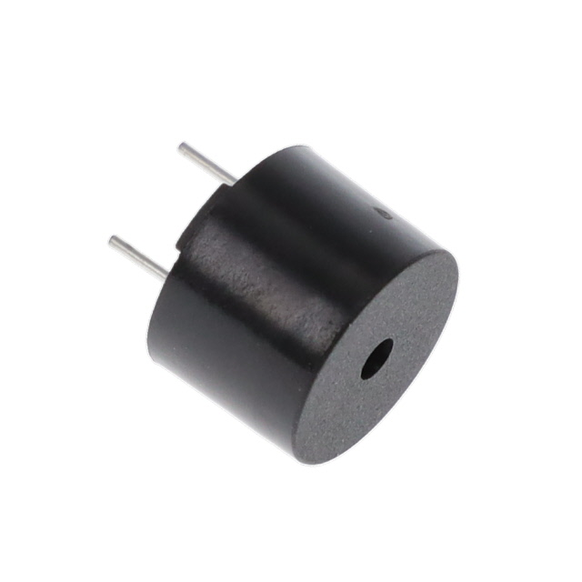

|
Resistor |
Limita el flujo de corriente en un circuito eléctrico. |
|
Capacitor |
Almacena energía eléctrica en un campo eléctrico. |
|
Diodo |
Permite el paso de corriente en una sola dirección. |
|
Transistor |
Amplifica señales eléctricas o actúa como interruptor. |
|
LED |
Diodo que emite luz cuando pasa corriente a través de él. |
|
Potenciómetro |
Resistor variable utilizado para ajustar niveles de voltaje. |
|  |
Buzzer |
Emite sonido cuando pasa corriente a través de él. |
|
Diodo Zener |
Un tipo especial de diodo utilizado para regulación de voltaje. |
|
Relevador |
Interruptor controlado eléctricamente para manejar corrientes más altas. |
|
LDR |
Resistor cuya resistencia varía con la intensidad de la luz. |
 |
Display 7 Segmentos |
Display utilizado para mostrar números y algunos caracteres. |
 |
Compuertas Lógicas |
Componentes que realizan operaciones lógicas en circuitos digitales. |
|
74LS90 |
Contador de 4 bits utilizado en circuitos digitales. |
|
74LS47 |
Decodificador BCD a 7 segmentos utilizado en displays. |
 |
Push Botón |
Interruptor que se activa al presionar. |
 |
Circuito Integrado |
Componente que combina varios circuitos electrónicos en una sola pieza. |
|
Timer555 |
Genera pulsos y tiene varios modos. |
|
Fusible |
Protege el circuito al interrumpir el flujo de corriente si se produce una sobrecarga. |
 |
Motor Eléctrico |
Convierte energía eléctrica en energía mecánica. |
|
Interruptor |
Componente que abre o cierra un circuito eléctrico. |
|
Osciloscopio |
Instrumento para medir señales eléctricas en un gráfico de tiempo. |